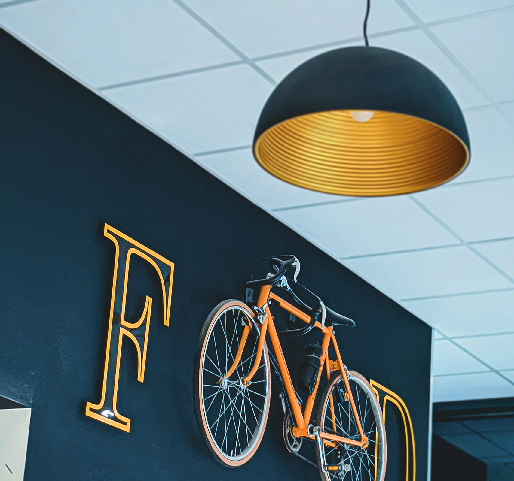

How The Role Of Restaurants Is Increasing
The restaurant industry has experienced a significant paradigm shift over the past decade. In addition to providing excellent food, restaurants strive to provide a pleasant customer experience to encourage their customers to visit them again. Just look at how brands will attract more customers. Caliburger franchise in Pasadena showcasing a burger.
But they have tons of cash to burn on such gimmicks, right? How can a smaller restaurant compete with that? That’s true, but AI in restaurants isn’t about fancy gimmicks or eye-catching technologies alone. Today, AI is accessible to everyone, and there are smaller ways to use it to your advantage.

“Ding* Your order is being prepared by Chef Bot 19 and will be delivered to your table in approximately 19 minutes. To get a receipt for your order, reply with H. We hope you enjoy your dining experience with us. – Team Bots”
How The Role Of Restaurants Is Increasing
Integrating inventory with your point of sale (POS) system is an essential AI capability that every restaurant needs. Restaurant owners can track inventory purchase data, which can help them buy ingredients more efficiently. In addition, it helps them ensure that they limit waste and that food costs remain under control.
- Automated Marketing: As discussed above, restaurant owners need a reliable digital marketing plan to stay a step ahead of the competition. AI today enables them to create better marketing strategies, including click-through rates, and run effective targeting campaigns to bring in more people to the restaurant. In addition.
- Hiring and Staff Management: Staffing is a significant challenge for any food and beverage business. AI can assist in hiring, training, and staffing to optimize the number of staff members needed during each shift.